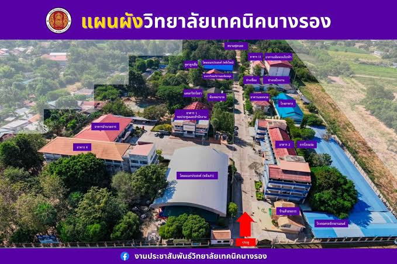

ที่ตั้งวิทยาลัย
วิทยาลัยเทคนิคนางรอง
1 หมู่ 1 ถนนบ้านเก่า–แพงพวย
ตำบลนางรอง อำเภอนางรอง จังหวัดบุรีรัมย์ 31110
- สามารถใช้ Google Maps ค้นหาวิทยาลัยและตรวจสอบเส้นทาง
จากตำแหน่งปัจจุบันของคุณได้
โดยระบบจะแสดงเส้นทางตามข้อมูลที่ Google Maps มีให้บริการ
ทำเนียบอาคาร
• โดมเอนกประสงค์ (หลังใหม่) — อาคารหลังคาโค้งขนาดใหญ่ตั้งอยู่ส่วนหน้า
• อาคาร 4 — อาคารเรียนที่อยู่ถัดจากโดมด้านซ้าย
• อาคารอำนวยการ — อาคารหลักขนาดใหญ่ที่อยู่ถัดเข้าไปจากอาคาร 4
• อาคาร 1 / หอประชุมและสำนักงาน — อาคารที่ตั้งอยู่ตรงกลางถัดเข้าไปจากโดม
• แผนกวิชาโยธา — อยู่โซนด้านหลังอาคาร 1
• ห้องพยาบาล — อยู่เยื้องไปทางขวาถัดจากแผนกวิชาโยธา
• บูธลูกเสือ — ตั้งอยู่บริเวณพื้นที่สีเขียวฝั่งซ้ายด้านบน
• โดมเอนกประสงค์ (หลังเก่า) — ตั้งอยู่โซนด้านหลังฝั่งซ้าย
• อาคารเรียนแผนกวิชาการโรงแรม — อยู่ด้านหลังสุดของฝั่งซ้าย
• ร้านค้าสหกรณ์ — อยู่ขวามือสุดใกล้กับทางเข้า
• อาคาร 2 — อาคารเรียนรวมและปฏิบัติการรูปทรงตัว L ขนาดใหญ่ฝั่งขวา
• การโรงแรม — ป้ายระบุโซนปฏิบัติการใกล้กับอาคาร 2
• อาคารเทพพนม — ตั้งอยู่ถัดเข้าไปด้านหลังอาคาร 2
• โรงอาหาร — อาคารหลังคาสีฟ้าถัดจากอาคารเทพพนม
• ช่างเชื่อม — โรงฝึกงานแผนกวิชาช่างเชื่อมโลหะ
• ช่างยนต์/โรงฝึกงาน — โรงฝึกงานแผนกวิชาช่างยนต์ตั้งอยู่ถัดเข้าไป
• อาคาร 11 / อาคารเฉลิมพระเกียรติฯ — อาคารหลังใหญ่ที่ตั้งอยู่โซนหลังสุดฝั่งขวา
• โรงจอดรถจักรยานยนต์ — โครงหลังคาสีฟ้าทอดยาวตลอดแนวรั้วฝั่งขวา
• สนามฟุตซอล — อยู่ด้านหลังสุดตรงกลางระหว่างทั้งสองฝั่ง
แผนผังอาคาร
